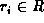
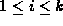
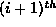
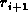
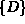
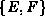
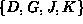
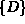
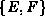
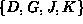

Data Structures and Algorithms
with Object-Oriented Design Patterns in Java
Data Structures and Algorithms
with Object-Oriented Design Patterns in Java
Consider a tree  ,
,  ,
as given by Definition
,
as given by Definition  .
.
Clearly the terminology used for describing tree data structures is a curious mixture of the mathematical, the genealogical, and the botanical. There is still more terminology to be introduced, but in order to do that, we need the following definition:
Definition (Path and Path Length) Given a tree T containing the set of nodes R, a path in T is defined as a non-empty sequence of nodes
where , for  such that the
node in the sequence, , is the parent of the  node in the sequence . The length of path P is k-1.
For example, consider again the tree  shown in Figure .
This tree contains many different paths.
In fact, if you count carefully, you should find that there are exactly 29
distinct paths in tree
shown in Figure .
This tree contains many different paths.
In fact, if you count carefully, you should find that there are exactly 29
distinct paths in tree  .
This includes the path of length zero, ;
the path of length one, ;
and the path of length three, .
.
This includes the path of length zero, ;
the path of length one, ;
and the path of length three, .
 Copyright © 1998 by Bruno R. Preiss, P.Eng. All rights reserved.
Copyright © 1998 by Bruno R. Preiss, P.Eng. All rights reserved.